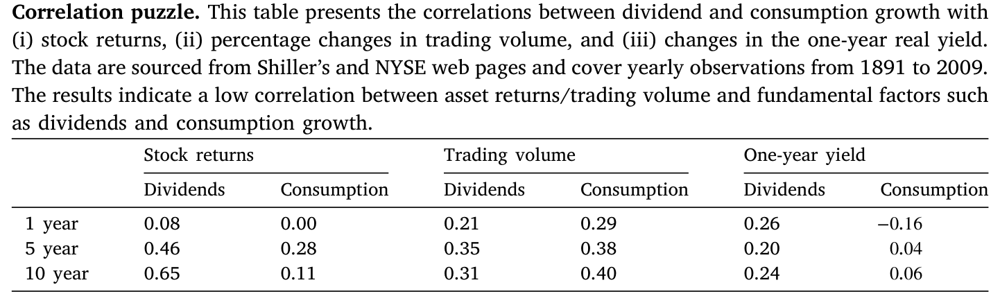
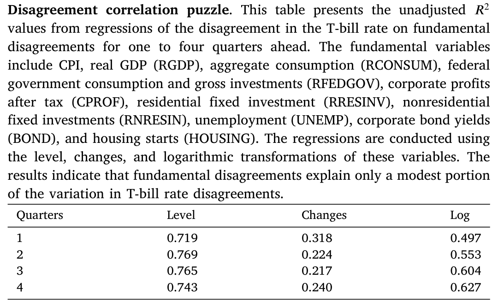
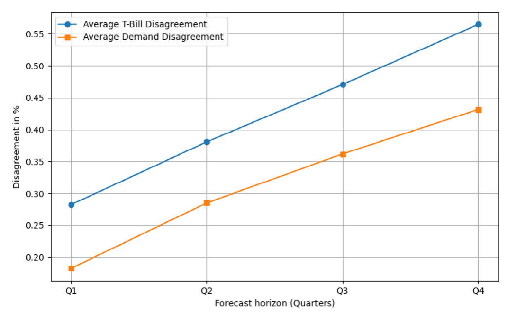
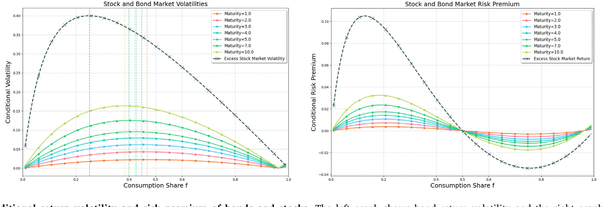
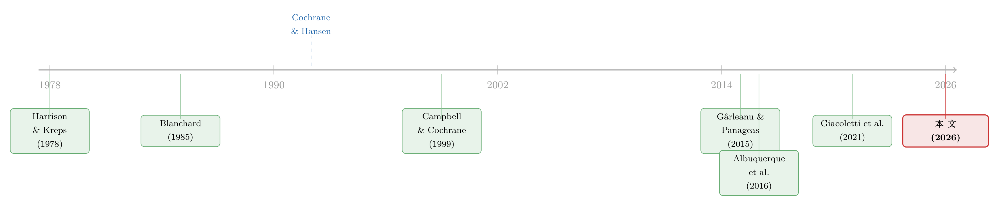

你卖出时，谁还在场？——把「需求分歧」写进资产定价
本文读的是 Heyerdahl-Larsen & Illeditsch (2026, Journal of Financial Economics)：投资者对未来利率的分歧，只有一部分能由对宏观基本面的分歧解释，剩下一大块「无主」的分歧，作者称之为需求分歧 (demand disagreement)——人们对「未来市场上是耐心的人多、还是没耐心的人多」看法不一。把这一层分歧写进一个世代交叠模型，就能同时生成随机的收益率波动、时变的债券风险溢价和向上倾斜的收益率曲线，并解开一个此前没人正面回答过的「分歧相关性之谜」。
1 引言：你卖出时，市场上还有谁？
投资这件事，归根结底是在权衡风险与收益；而要权衡，就得预测未来的现金流和未来的价格。现金流好预测——它系于经济基本面。可价格呢？价格不只取决于资产明天值多少，还取决于你想卖的那一刻，对面有没有人接盘、接盘的人有多想要。
这是一个常被忽略、却极为朴素的担忧：当我若干年后要把手里的债券卖掉时，市场上是「钱多得没处放、拼命想存钱」的耐心投资者占上风，还是「急着把钱花掉、不愿持有长久期资产」的没耐心投资者占上风？这关乎未来对储蓄的总需求，而总需求又直接决定了未来的价格与利率。
问题在于，这种对未来需求的不确定性，几乎和基本面没什么关系。它来自一件谁也说不准的事：未来人们的时间偏好（time preference）会怎样分布。经典资产定价模型几乎都把这层东西略掉了——它们默认投资者的偏好、未来的需求都是已知的，于是资产价格被牢牢地拴在经济基本面上。
可数据偏偏不买账。这就引出了本文真正要对付的两个谜题。
2 两个谜题：从「相关性之谜」到「分歧相关性之谜」
2.1 老谜题：相关性之谜
先说一个金融学的老熟人——相关性之谜 (correlation puzzle)。在 Lucas (1978) 那类禀赋经济或 Jermann (1998) 那类生产经济里，所有的基本面冲击都是供给侧冲击，于是股票收益本该和产出增长（消费、GDP）高度同步。但现实里，二者的相关性低得离谱。Cochrane & Hansen (1992)、Campbell & Cochrane (1999) 把这个现象正式命名为相关性之谜。
本文 Table 1 重现了它：在 1 年、5 年、10 年三个尺度上，股票收益与消费增长的相关系数分别只有 0.00、0.28、0.11，没有一个超过 30%；和分红的相关性虽高一些（10 年期 0.65），也远低于经典模型给出的数。更要命的是，异质代理人模型还预言交易量该和基本面强相关——可数据里交易量与分红、消费的相关系数也只在 0.21 到 0.40 之间晃。

Table 1
（关于贴现率变动如何独立于基本面、成为资产定价的中心议题，可参见《贴现率：资产定价的中心议题》。）
2.2 新谜题：分歧相关性之谜
接着，一个自然的问题是：那把投资者的分歧加进来，是不是就能救场？毕竟人们对基本面看法不同，自然会对价格看法不同。
但这里藏着一个微妙而致命的逻辑。本文指出，在一个带异质信念的马尔可夫均衡里，所有投资者尽管对基本面 \(X_t^F\) 看法不同，却都同意同一个定价函数 \(p_t(\cdot)\)——也就是说大家都认可「基本面如何映射成价格」这套规则。于是投资者 \(i\) 对未来价格的预测就是：
$$ \hat{p}^{\,i}_{t,t+\Delta t} = E^i\!\big[\,p_{t+\Delta t}\,\big] = E^i\!\Big[\,\mathbb{E}^i_{t+\Delta t}\big[m^i\,x\big]\,\Big] = E^i\!\big[\,p\,(X^F_{t+1})\,\big], \quad 0<\Delta t\le 1. $$
这个式子说穿了一件事：价格分歧的唯一来源，就是基本面分歧。如果大家对基本面如何变成价格毫无异议，那么对价格的分歧就只能、也必然全部来自对基本面本身的分歧。换句话说，价格分歧的变动应当被基本面分歧的变动「张满」。
这与数据相符吗？不符。这正是 Kenneth Singleton 在 2021 年美国金融学会主席演讲（题为「How Much 'Rationality' Is There In Bond Market Expectations」）里点破、并由 Giacoletti et al. (2021) 进一步检验的事实：对通胀和产出增长的分歧，远不足以解释人们对未来利率的全部分歧。作者把这个此前文献从未正面处理的现象，命名为分歧相关性之谜 (disagreement correlation puzzle)。
它比相关性之谜更难缠：因为「所有人同意定价函数」这一条几乎是异质信念模型的标配，这个紧绑很难打破。
2.3 把「需求分歧」从数据里量出来
然后，作者动手把这块「无主的分歧」量化出来。数据用的是专业预测者调查 (Survey of Professional Forecasters, SPF)，季度频率，覆盖 1981 年三季度到 2024 年二季度。每位预测者既报未来四个季度的三月期国库券利率预测，又报一大堆宏观基本面预测：CPI、实际 GDP、总消费、联邦政府消费与投资、税后企业利润、住宅与非住宅固定投资、失业率、公司债收益率、新屋开工等等。
把每位预测者 \(i\) 的收益率预测，对他自己那一篮子宏观基本面预测做一个混合回归（并加入对当期收益率的 nowcast 以吸收持续性）：
$$ \hat{y}^{\,i}_{t,t+\Delta} = \beta_0 + \beta_X'\,\hat{X}^{\,i,F}_{t,t+\Delta t} + \beta_y\,\hat{y}^{\,i}_{t,t} + \varepsilon^{\,i}_{t,t+\Delta t}, \quad \Delta t\in\{1Q,2Q,3Q,4Q\}. $$
残差 \(\varepsilon^{\,i}_{t,t+\Delta t}\) 就是预测者 \(i\) 那份与基本面无关的收益率观点。把它在每个时点 \(t\) 上横截面取标准差，就得到了需求分歧的代理变量：
$$ DD_{t,t+\Delta t} = \mathrm{SD}_t\!\big(\varepsilon^{\,i}_{t,t+\Delta t}\big). $$
那么，基本面到底能解释多少？本文 Table 2 给出了关键的 \(R^2\)。在水平值回归里，基本面分歧能解释七成上下的国库券利率分歧（四个季度分别为 0.719、0.769、0.765、0.743）；但一旦看变化量（这是真正反映「分歧在波动」的口径），\(R^2\) 直接跌到 0.318、0.224、0.217、0.240——也就是说，利率分歧的变动里有近八成，基本面根本管不着。

Table 2
这里要强调：本文塞进回归的解释变量比 Giacoletti et al. (2021) 还多，结论却一致——基本面分歧解释不了利率分歧。残差不是因为「漏了某个基本面」，而是结构性地存在。
更有意思的是图里这块残差随期限拉长越来越大：在一个季度的视野上，需求分歧占了收益率分歧的 65%；到四个季度，这个比例升到 76%。视野越远，「谁还在场」的不确定性越压过「基本面如何」的不确定性。

Figure 1: shows that both yield and demand disagreement increase with
3 模型：把「对未来需求的分歧」写成一个状态变量
但真正关键的一步，是给这块残差一个结构化的、能定价的解释。作者搭了一个连续时间的世代交叠 (overlapping generations, OLG) 模型，沿用 Blanchard (1985) 与 Gârleanu & Panageas (2015) 的传统。
3.1 设定
每个个体活到一个随机死亡时刻 \(\tau\)，服从风险率为 \(\nu>0\) 的指数分布；每期出生质量为 \(\nu\) 的新个体，于是总人口恒为 1。每个新出生的世代领到一棵新「树」，时点 \(t\) 出生在 \(s\le t\) 的那棵树的分红是 \(Y_{s,t}=\nu e^{-\nu(t-s)}Y_t\)，加总后总产出（即总分红）等于 \(Y_t\)。总产出服从几何布朗运动 (geometric Brownian motion)：
$$ dY_t = \mu_Y\,Y_t\,dt + \sigma_Y\,Y_t\,dZ_{Y,t}, $$
这里 \(Z_{Y,t}\) 是供给冲击，\(\mu_Y\)、\(\sigma_Y\) 是产出增长的期望与波动。
经济里有两类人，风险偏好相同，但时间贴现率不同：耐心的 \(a\) 型贴现率低（\(\rho_a\)，满足 \(\nu+\rho_a>0\)），没耐心的 \(b\) 型贴现率高（\(\rho_b\)）。所有人都是对数效用、禀赋相同、市场完全——这套设定换来了随机贴现因子的闭式解，从而能把需求分歧的效应从其他价格变动中干净地剥离出来。
3.2 虚假共识偏差：分歧从哪来
关键的「分歧」来自一个心理学概念——虚假共识偏差 (false consensus bias)（Ross et al., 1977）：每个人都高估「和自己同类的人」在未来的占比。具体地，耐心的 \(a\) 型对长期均值乐观（\(\bar l_a\ge\bar l\)），没耐心的 \(b\) 型悲观（\(\bar l_b\le\bar l\)），而且两边偏得一样多：\(\bar l_a-\bar l=\bar l-\bar l_b\)。注意——没有谁的信念更准，两边对称地错。
于是，即便大家对基本面 \(Y_t\) 一清二楚，也会对「未来市场上耐心者与没耐心者的相对比例」持续争执，而这个比例恰恰决定了未来对储蓄与消费的总需求。这就是需求分歧，它由一个独立于供给冲击 \(Z_Y\) 的需求冲击 \(Z_\alpha\) 驱动。
3.3 核心方程：随机贴现因子里多出来的那项
模型最核心的一步，是写出状态价格密度 \(\xi_t = X_t/Y_t\) 的动态。对它用伊藤引理（Itô's lemma），略去高阶小量后得到（论文式 A.5）：
$$ \frac{d\xi_t}{\xi_t} = \frac{dX_t}{X_t} - \frac{dY_t}{Y_t} - \frac{dX_t}{X_t}\frac{dY_t}{Y_t} + \left(\frac{dY_t}{Y_t}\right)^2 = -r_t\,dt - \theta_{Y,t}\,dZ_{Y,t} - \theta_{\alpha,t}\,dZ_{\alpha,t}. $$
把它整理成最能说明问题的形式，并把三块拆开看：
这就是全文的「核反应堆」：随机贴现因子里多出来一项 \(\theta_{\alpha,t}\,dZ_{\alpha,t}\)。它不挂在产出 \(Y\) 上，而挂在「未来需求」这个与基本面正交的维度上。一旦贴现因子里有了这一项，价格分歧就不必再被基本面分歧张满——分歧相关性之谜由此被打开。
3.4 需求风险的价格，由消费份额决定
那么 \(\theta_{\alpha,t}\) 到底由什么定？答案是两类人的消费份额 (consumption share)。记 \(f_t=X_t^a/X_t\) 为耐心者的消费份额。每类人的财富—消费比是
$$ \phi^i = \frac{W^i_t}{c^i_t} = \frac{1}{\rho^i+\nu}, \qquad i\in\{a,b\}, $$
因为 \(c^i_t=(\rho^i+\nu)W^i_t\)。市场出清把两类人的需求加总。于是出现了一个漂亮的对称结构：
- 当两类人消费份额相等时，市场观点（按消费份额加权的平均信念）恰好等于外部观察者（计量经济学家）的观点，需求风险价格 \(\theta_\alpha=0\)。此时耐心者（对未来储蓄需求乐观）做多永续债 (consol bond)，没耐心者（悲观）做空，刚好对冲。
- 当没耐心者份额上升、影响力变大，他们把永续债价格压低。在计量经济学家看来，债券「被低估」了，于是需求风险价格为正。
- 反过来，当耐心者主导，债券「被高估」，需求风险价格转负。
也就是说，需求风险溢价的符号是内生的，随两类人消费份额的此消彼长而翻转。这是本文相比 Albuquerque et al. (2016) 那类「代表性代理人贴现率外生时变」模型更细腻的地方——这里风险溢价的高低与正负，是由经济中投资者类型分布的演化端出来的，而非外生设定的。
4 主要结果：随机波动、时变溢价、上斜曲线
有了这台反应堆，三个实证上长期困扰人的现象就一并落地了。
其一，随机的收益率波动。 消费份额波动率 \(\sigma_\alpha\) 是份额 \(f\) 的凹函数——在两类人势均力敌时最大，在某一方主导时收缩。由于债券（永续债与贴现债）对需求冲击的暴露正比于 \(\sigma_\alpha\)，于是收益率波动天然就是时变、随机的，而且需求分歧上升会抬高所有期限的收益率波动。
其二，向上倾斜的实际收益率曲线与时变债券风险溢价。 条件风险溢价可正可负，取决于此刻是耐心者还是没耐心者主导；但无条件风险溢价通常为正、且随分歧上升而上升。原因很巧妙：一个资产的需求风险暴露与它的风险价格，恰恰在同一批时期里同时变高，二者相乘，把平均溢价放大了。这种放大对长久期 (duration) 债券更猛——它们对需求冲击更敏感，于是收益率曲线向上倾斜。

Figure 5: Conditional return volatility and risk premium of bonds and stocks. The left graph shows bond return volatility and the right graphs shows t
如上图（图 5）所示，债券的条件收益波动率与风险溢价都随消费份额而起伏，正是「暴露」与「价格」同向波动、相互放大的写照。
其三，实证验证。 回到 SPF 那个需求分歧代理变量 \(DD_{t,t+\Delta t}\)：它与各期限的收益率及其波动率正相关，并能预测未来名义债券的超额收益——这与模型「需求分歧↑ ⇒ 收益率波动↑、未来债券风险溢价↑」的预言一致。（关于债券风险与收益里「价格」与「数量」如何分解，可参见《风险的价格与数量：拆开中美国债的「风险-收益之谜」》。）
5 文献脉络
把这篇论文放回它的来路，能看得更清楚。
最早，异质信念这条线由 Harrison & Kreps (1978) 开启，经 Detemple & Murthy (1994)、Basak (2000) 等发展成熟；这些模型几乎都让分歧落在宏观基本面上（如 Dumas et al., 2009 让产出增长分歧驱动价格分歧）。与此并行，相关性之谜由 Cochrane & Hansen (1992)、Campbell & Cochrane (1999) 立为靶子：基本面与资产价格的相关性太低。

另一条线是偏好冲击：Garber & King (1983)、Campbell (1993) 早有铺垫，Maurer (2012)、Albuquerque et al. (2016) 用代表性代理人的时间贴现率冲击去对付相关性之谜，但代价是要么依赖递归偏好、要么把时变性外生地塞进去。再一条线是 Blanchard (1985)、Gârleanu & Panageas (2015) 的 OLG 资产定价框架，它保证了平稳性、让任何一类人都不会长期独霸，从而能算无条件矩。
本文站在这三条线的交汇处：它不让分歧落在基本面上，而是落在「未来投资者类型分布」上；它不靠递归偏好，而是证明只要投资者在贴现率和信念上有差异，需求冲击就会被定价。更重要的是，它接住了 Singleton (2021) 主席演讲与 Giacoletti et al. (2021) 抛出的那个经验事实，把它升级成一个有模型、有机制、可检验的「分歧相关性之谜」。
6 评论与延伸（Q&A + 研究方向）
(a) 几个可能的疑问
Q：需求分歧和「投资者情绪」、「对基本面的分歧」到底有什么不一样？
关键在于「正交」。对基本面的分歧最终还是关于现金流；情绪 (sentiment) 则常被建模成心理偏差，但这类模型通常仍隐含价格分歧与基本面分歧高度相关。需求分歧的特殊之处是：它完全独立于基本面，落在「未来谁在市场上、对储蓄的总需求多强」这个维度，因此能在基本面分歧不动时单独推动价格——这正是打开分歧相关性之谜所必需的。
Q：那个用残差当代理变量的做法，会不会只是把「没测准的基本面」打包成了需求分歧？
这是最该担心的问题，作者也坦承「其他机制也可能贡献这块残差」（脚注里举了「对各公司现金流贡献的异质看法」）。他们的辩护是：塞进去的基本面变量比 Giacoletti et al. (2021) 还多，残差依然顽固存在，且随期限单调放大——若只是测量噪声，不该有这么系统的结构。但严格说，「正交于已观测基本面」不等于「正交于全部基本面」，这是识别上的软肋。
Q：风险溢价居然可正可负，这不反直觉吗？
恰恰是本文的精彩处。条件溢价的符号由「此刻谁主导」决定：没耐心者主导时债券显得被低估、需求风险价格为正；耐心者主导时反之。但无条件溢价通常为正，因为风险暴露和风险价格在同一批时期同时变高，相乘放大了平均值。符号内生、却又能在平均意义上复现「正的、随久期上升的期限溢价」，这比外生设定优雅得多。
Q：为什么非要用 OLG，而不是一个固定两人的经济？
因为在固定两人的异质偏好经济里，长期总有一类人被「淘汰」（消费份额趋于 0 或 1），无法计算平稳的无条件矩。OLG 通过不断有新人出生、老人死亡，保证两类人都不会长期独霸，经济有平稳分布——这才谈得上「无条件收益率曲线」「无条件溢价」这些本文要解释的对象。
Q：log 效用是不是太特殊了？换成别的偏好结论还成立吗？
对数效用是为了换闭式解、把需求分歧的效应干净剥离。作者特意强调，与 Albuquerque et al. (2016) 不同，他们不需要对不确定性提前消解的偏好（递归偏好）就能让需求冲击被定价——只要贴现率和信念有异质性即可。这说明机制本身不依赖偏好的特殊形式，对数效用更多是「为了好算」而非「为了出结论」。
Q：这套实际收益率曲线的结论，怎么对上名义债券的数据？
模型给的是实际收益率曲线向上倾斜；而实证里预测的是名义债券超额收益。二者之间隔着通胀与通胀分歧——已有文献（如 Ehling et al., 2018a 关于通胀分歧与收益率曲线）正是处理这一层的。本文的需求分歧代理变量直接来自名义国库券利率预测的残差，所以经验对接是成立的，但「实际模型 ↔ 名义数据」的桥梁仍值得更显式地搭一遍。
(b) 几个可能的研究问题与提案
1. 把需求分歧搬到公司债市场。 【经济故事】本文的需求风险价格由「耐心 vs. 没耐心」的份额决定；在公司债市场，长久期信用债对需求冲击的暴露应更大，需求分歧或能预测信用利差的时变部分，而非仅仅违约风险。【可行性】中。可用 TRACE 交易数据构造信用债超额收益，用 SPF 的公司债收益率分歧（BOND 变量，本文已用到）或 Blue Chip 调查构造需求分歧代理变量，做预测回归。难点是把需求分歧从信用风险分歧中剥离。
2. 外资持有人是不是「需求冲击」的一个可观测来源？ 【经济故事】本文的需求冲击是抽象的 \(Z_\alpha\)；现实中，外国官方与私人投资者对美债、美国公司债的配置变动，正是一类与美国基本面部分脱钩的「未来需求」波动。可检验：外资持有份额的意外变动，是否对应着收益率波动与期限溢价的变化。【可行性】中高。数据有 TIC、美联储 Flow of Funds、Koijen-Yogo 式的需求体系估计。识别上可借助外生的外资流入冲击（如他国货币政策、主权基金规则变动）。
3. 需求分歧能否解释「流动性」与「波动」的共同时变？ 【经济故事】模型里收益率波动是随机的、随分歧而起伏；而流动性（买卖价差、价格冲击）也是时变的。若二者同由需求分歧驱动，则波动与流动性应在「两类人势均力敌」的时期同时恶化。【可行性】中。可用国债与公司债的日内流动性指标，对需求分歧代理变量回归，检验共同因子。
4. 把虚假共识偏差换成可学习的信念，机制还稳吗？ 【经验故事】本文让两类人「同意各自不同意」、偏差恒定；但现实中人会从经验中学习（Ehling et al., 2018b 那条线）。若允许信念随实现的份额变化更新，需求分歧会不会自我消解、还是被新生世代不断补充？【可行性】中低。偏理论，需在 OLG 里嵌入学习，闭式解大概率失去，要靠数值解。
5. 需求分歧与货币政策的交互。 【经济故事】若需求分歧在加息周期里放大（人们更难判断未来储蓄需求），那么货币政策的传导会随需求分歧状态而异。【可行性】中。可用高频货币政策冲击（如 Nakamura-Steinsson 式）与需求分歧代理变量做交互项，看政策对收益率曲线的影响是否依赖分歧水平。
我的判断
这篇论文最漂亮的地方，是它没有靠加自由度去拟合数据，而是指出了一个被既有框架结构性地排除掉的维度——「对未来需求的分歧」——并证明只要承认这个维度，一连串本来需要各自打补丁的现象（低相关、分歧相关性之谜、随机波动、时变且可正可负的溢价、上斜曲线）就能从同一个机制里长出来。OLG + 对数效用 + 闭式解的组合，让机制透明可读，这是理论论文难得的克制。
我对识别的主要担心仍是那个残差代理变量：「正交于已观测基本面」毕竟不等于「正交于真实需求」。残差里到底有多少是需求分歧、有多少是漏测的基本面或测量噪声，本文给的是间接证据（多塞变量后残差仍在、随期限放大），而非一个能直接验证「这就是时间偏好分歧」的独立 moment。后续我最想看到的，是把这个抽象的需求冲击 \(Z_\alpha\) 锚到一个可观测的需求来源上——外资流动、养老金/保险的久期需求、或人口结构变化——让「需求分歧」从一个残差，变成一个能被独立测量、独立证伪的对象。那时这套机制才算真正落了地。
参考文献
Albuquerque, R., Eichenbaum, M., Luo, V.X., Rebelo, S. (2016). Valuation risk and asset prices. Journal of Finance 71, 2861–2903.
Basak, S. (2000). A model of dynamic equilibrium asset pricing with heterogeneous beliefs and extraneous risk. Journal of Economic Dynamics and Control 24, 63–95.
Blanchard, O.J. (1985). Debt, deficits, and finite horizons. Journal of Political Economy 93, 223–247.
Campbell, J.Y. (1993). What moves the stock and bond markets? A variance decomposition for long-term asset returns. Journal of Finance 48, 3–37.
Campbell, J.Y., Cochrane, J.H. (1999). By force of habit: A consumption-based explanation of aggregate stock market behavior. Journal of Political Economy 107, 205–251.
Cochrane, J.H., Hansen, L.P. (1992). Asset pricing explorations for macroeconomics. NBER Macroeconomics Annual 7, 115–182.
Detemple, J., Murthy, S. (1994). Intertemporal asset pricing with heterogeneous beliefs. Journal of Economic Theory 62, 294–320.
Dumas, B., Kurshev, A., Uppal, R. (2009). Equilibrium portfolio strategies in the presence of sentiment risk and excess volatility. Journal of Finance 64, 579–629.
Ehling, P., Gallmeyer, M., Heyerdahl-Larsen, C., Illeditsch, P. (2018a). Disagreement about inflation and the yield curve. Journal of Financial Economics 127(3), 459–484.
Gârleanu, N., Panageas, S. (2015). Young, old, conservative and bold: The implications of heterogeneity and finite lives for asset pricing. Journal of Political Economy 123, 670–685.
Giacoletti, M., Laursen, K., Singleton, K. (2021). Learning from disagreement in the U.S. Treasury bond market. Journal of Finance 76(1), 395–441.
Maurer, T. (2012). Is consumption growth merely a sideshow in asset pricing? Working Paper, Washington University in St. Louis.